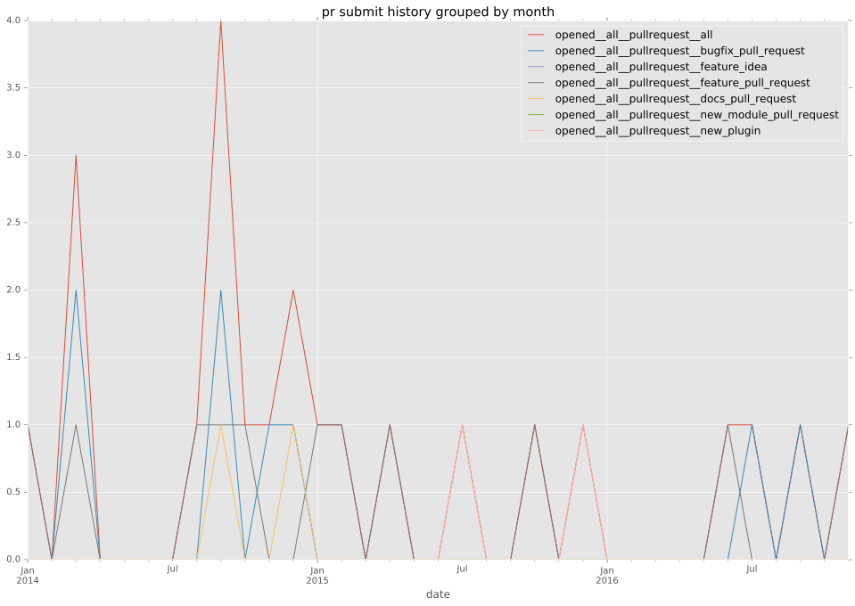
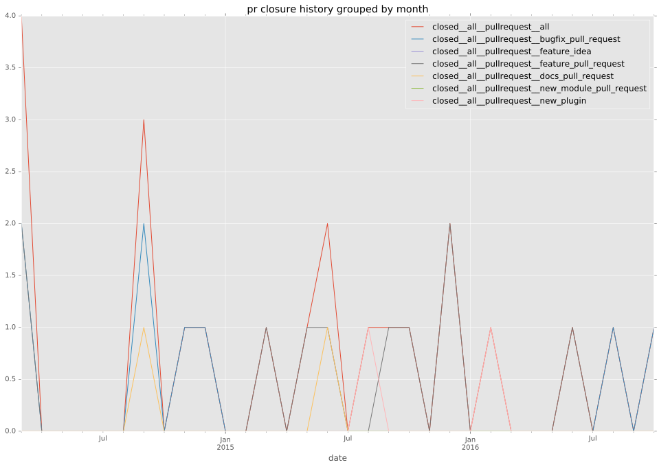

authors
- ramondelafuente
maintainers
- ramondelafuente
contributors
- ramondelafuente : 46 commits
- abadger : 5 commits
- ypid : 2 commits
- sivel : 2 commits
- bcoca : 1 commits
- nsg : 15 commits
- resmo : 10 commits
- m-barthelemy : 1 commits
- wkf : 2 commits
- tobz-nz : 2 commits
total issue counts
bugfix pull request: 10
pullrequest: 21
docs pull request: 2
feature pull request: 9
feature idea: 2
issue: 22
new plugin: 1
bug report: 19
issue history
pullrequest history


days open by issue type
feature pull request
count: 12
std: 141.449209216
min: 0
max: 449
median: 112.5
mean: 150.333333333
all
count: 50
std: 117.922361176
min: 0
max: 498
median: 11.0
mean: 69.52
pullrequest
count: 0
std: nan
min: nan
max: nan
median: nan
mean: nan
docs pull request
count: 2
std: 123.743686708
min: 8
max: 183
median: 95.5
mean: 95.5
bugfix pull request
count: 15
std: 5.6374597454
min: 0
max: 13
median: 1.0
mean: 5.06666666667
feature idea
count: 1
std: nan
min: 0
max: 0
median: 0.0
mean: 0.0
issue
count: 0
std: nan
min: nan
max: nan
median: nan
mean: nan
new plugin
count: 2
std: 0.0
min: 77
max: 77
median: 77.0
mean: 77.0
bug report
count: 18
std: 132.522251184
min: 0
max: 498
median: 11.0
mean: 69.5
closures grouped by total days open